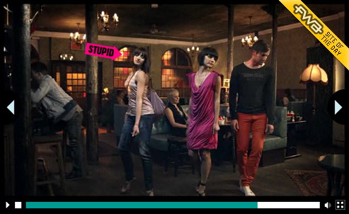

Diesel A hundred lovers

Well I've been inexcusably slack in posting updates this year. Apologies to my readers. Both of you.
Anyway, backtracking a bit, the first big project I completed this year was an interactive film showcasing Diesel's 2010 Summer collection.
A homage to Goddard's 1964 film 'Bande à part', we shot the video in an uber cool East London pub and used an editing technique known as match-cut to squeeze the many participants adorned in Diesel's collection into the 3 minute film.
Dubbed 'A hundred lovers' after the excellent song by new artist Josef Xorto, the piece took the form of a music video. The result was entertaining and somewhat charming.
The big twist from a technical and usability point of view is that you can roll over the video at any point which pauses it and shows hot spots for each garment and participant in that particular frame.
From there you can find out about participants and follow their social links, or discover what garments they are wearing and follow links to buy them on Diesel's store.
To achieve this we first built an app, in Flash, to enable placing hot spots on the frames of the film and linking them up to the right data.
In order to be able to seek to any frame, skipping through to each look we went with Akamai real time streaming for delivery of the video.
We had to ensure we had highly optimised ActionScript to process all the hot spots for each frame. Instance reuse via an object pool was a key part of this, along with massively compressed JSON for the huge data set.
The hard work has been rewarded by great feedback from the public, which is still going strong on Twitter, the industry press and the FWA Site of the Day award for 15th April.
www.diesel.com/ahundredlovers
www.thefwa.com/site/a-hunrdred-lovers
Case study film:
Diesel - A Hundred Lovers - Case Study from Stinkdigital on Vimeo.
Posted By }i{ on June 14, 2010


{kind=link}
{kind=link}